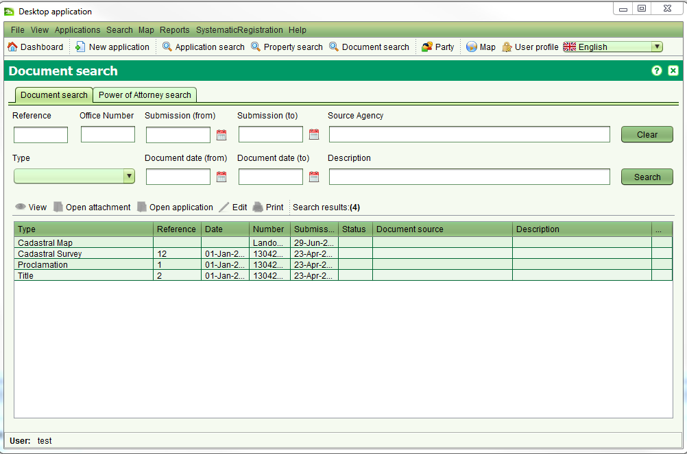

TL'écran de recherche de documents permet de trouver des documents pour l'édition ou la visualisation.
On y accède par le menu Recherche > Recherche Document ou en sélectionnant 

Il est possible de chercher n'importe quelle combinaison de Référence, Numéro SOLA, Type, Date de soumission, Période, Agence Source ou Description. Les données de recherche possibles se présentent telles que:
Pour visualiser les détails enregistrés d'un document, sélectionner le document dans la liste des résultats de la recherche et cliquer le bouton Afficer
de la barre de menu.
Le bouton  Ouvrir de la barre de menu peut être utilisé pour ouvrir l'image du document si une image y a été liée.
Ouvrir de la barre de menu peut être utilisé pour ouvrir l'image du document si une image y a été liée.
Pour éditer les détails du document, sélectionner le bouton Editer de la barre de menu.
Vous pouvez mettre à jour les détails enregistrés du document ainsi qu'attacher une image au document.
Le bouton Imprimer  de la barre de menu n'est pas encore mise en oeuvre.
Pour imprimer un document, ouvrie l'attachement du document et imrpimer le document en utilisant les options d'impression du menu disponibles depuis l'affichage par défaut du document.
de la barre de menu n'est pas encore mise en oeuvre.
Pour imprimer un document, ouvrie l'attachement du document et imrpimer le document en utilisant les options d'impression du menu disponibles depuis l'affichage par défaut du document.
Une procuration est un document légal qui autorise une personne (avocat) d'agir au nom d'une autre personne (représenté)
dans des affaires privées, commerciales, entreprenariales ou quelqu'autres sujets. Les documents de procuration peuvent être enregistrés dans SOLA et liés
à une demande pour justifier les transactions de terres effectuées par l'avocat au nom de la personne représentée.
Il est possible de rechercher des documents de procuration enregistrés en utilisanr la fonction Recherche Document, cependant l'onglet Procuration
fourni des critères de recherche supplémentaires permettant de chercher des documents de procuration en utilisant le nom de l'avocat ou le nom
de la personne représentée.
Les deux types de recherche amènent aux documents de procuration courants et historiques (ex: annulés), cependant ces recherches excluent
les nouveaux documents de procuration qui ne sont pas encore enregistrés. Pour chercher les documents de procuration En Attente,
utiliser une Recherche Demande pour localiser le document grâce au numéro de référence.
Voir aussi